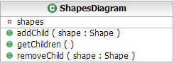
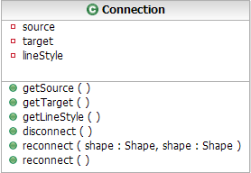
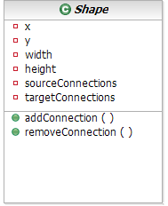
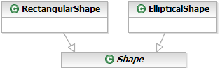
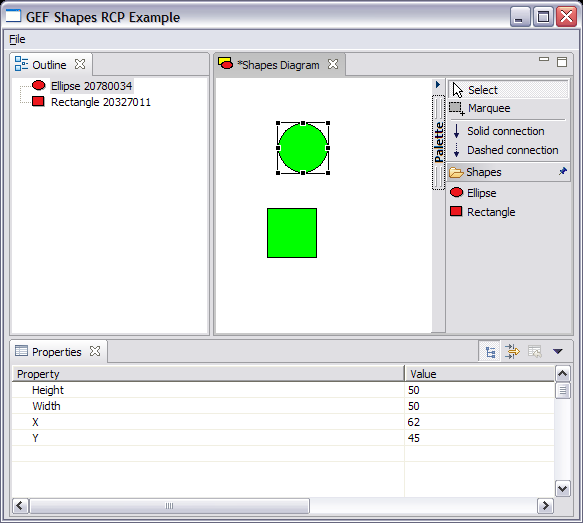

| Eclipse Corner Article |

Summary
The Graphical Editing Framework (GEF) provides a framework for creating visual editors while being model agnostic. In most cases, people bring their own model which tend to be based on Plain Old Java Objects (POJOs). An alternative using POJOs is the Eclipse Modeling Framework (EMF), which provides many features for manipulating models that aren't found in POJOs. The purpose of this article is to build upon the shapes example provided by GEF using the Eclipse Modeling Framework (EMF) and to provide an introduction using EMF based models in GEF based editors.
Chris Aniszczyk, IBM
June 8, 2005
The examples in this article were built and tested on:
There is no guarantee the examples will work with other versions.
The Graphical Editing Framework (GEF) assumes that you have a model of some type. The type in most cases, is a set of custom Java classes created to suit the needs of an application. Overlaying the model, users would implement their own observer pattern. For example, when an object changes state, GEF becomes aware of the change, and performs the appropriate action, such as redrawing a figure due to a move request. Users spend time building their own viewers (i.e. properties) and deciding how the model should be persisted. Most novices learning GEF don't realize EMF can help with several modeling issues previously mentioned. The Eclipse Modeling Framework (EMF) is a Java framework and code generation facility for building tools and other applications based on a structured model. EMF consists of two fundamental frameworks: the core framework, responsible for basic code generation, and runtime, responsible for creation of Java implementation classes for a model. The EMF.edit framework builds on the core framework to add support for generating adapter classes that enable viewing and command-based editing of a model. Furthermore, EMF provides a free adapter that listens for model changes, a requirement when building a GEF editor. In addition, EMF includes default support for persistence using XMI or XML (you can write your custom persistence layer by extending a few classes) [1].
The purpose of the article is to build upon the shapes example that was extensively evaluated in a previous Eclipse Corner article [2]. The shapes model currently exists as a custom set of Java objects, this article illustrates how to transform the shapes model into an EMF-based model. The transformation occurs in two major steps: mapping custom Java objects to an EMF model, and modify EditParts to use the new features available in EMF.
The transformation of the Shapes example will occur in the following order:
The current shapes model (see Figure 1) was designed for simplicity and for instructional purposes. It consists of the following classes:
To transform the simple shapes model, we must map it an EMF model. This can be accomplished in many ways (i.e. XSD, Java, UML) and is discussed further at the EMF documentation site [3]. For simplicity, this article will only focus on using annotated Java as EMF input. Listed below are sketches representing the old shapes model and their corresponding annotated Java models. After we have these models, we can use EMF to generate the rest of the code needed to interact with our models.
 A tutorial is available that describes how
to generate an EMF model from annotated Java [4].
A tutorial is available that describes how
to generate an EMF model from annotated Java [4].
|  |
/** @model */
public interface ShapesDiagram {
/** @model type="Shape" containment="true" */
public List getShapes();
}
|
|  |
/** @model */
public interface Connection {
/** @model */
public Shape getSource();
/** @model */
public Shape getTarget();
/** @model */
public boolean isDashed();
/** @model */
public void reconnect();
/** @model */
public void disconnect();
}
|
|  |
/** @model abstract="true" */
public interface Shape {
/** @model */
public int getX();
/** @model */
public int getY();
/** @model */
public int getWidth();
/** @model default="0" */
public int getHeight();
/** @model type="Connection" containment="true" */
List getSourceConnections();
/** @model type="Connection" */
List getTargetConnections();
}
|
|  |
/** @model */
public interface RectangularShape extends Shape {
}
/** @model */
public interface EllipticalShape extends Shape {
}
|
Before I discuss how to add properties to your EMF model, I would like to bring up the issue of notational model and semantic model separation. It is considered good design to separate visual information from semantic information. In the original shapes example, there was no logical separation of the notational (visual) information, like size and location, from the semantic information. For simplicity, this example will not separate visual information from semantic information. Note the original shapes example didn't have semantic information unless you can imagine the shape model having a name attribute that would specify the name of a shape. If you are curious to see this type of separation, the Looking to the Future section discussed in this article contains information of interest.
Eclipse provides a properties view that allows for the manipulation of currently selected object properties as long as the object adheres to the IPropertySource interface. In GEF, AbstractEditPart checks if its model implements IPropertySource, if so the model is returned so the Eclipse properties view can take advantage of it.
For simplicity reasons this example isn't taking advantage of EMF.edit property source generation support. The reason being is that EMF and GEF use different command stacks and command interfaces so they can't be used together easily. In order to take advantage of EMF.edit, the user needs to wrap EMF commands with GEF commands. If you think you are hot stuff, you can further investigate this issue [5] [6] in a few ways:
In order to take advantage of Eclipse properties views we create classes
that implement the IPropertySource interface. To investigate how
this is accomplished, it is recommended to look at
AbstractPropertySource and its implementers. Listed below is an
example implementation, ConnectionPropertySource which needs to
define how a property is  retrieved and
retrieved and  set.
set.
public class ConnectionPropertySource extends AbstractPropertySource {
...
public Object getPropertyValue(Object id) {
if(id == ID_STYLE) {
return Boolean.toString(getConnectionModel().isDashed());
}
return null;
}
public void setPropertyValue(Object id, Object value) {
if(id == ID_STYLE) {
getConnectionModel().setDashed(Boolean.valueOf((String) value));
}
}
...
}
In GEF, the EditParts act as controllers and receive notice of input and then properly direct changes to its model and view objects. It also keeps track of connections between the model objects and any other communication. In the original shapes example [2], every model object extended the abstract class ModelElement which included support for adding and removing listeners from model objects. This type of behavior is possible with EMF since every EMF Object (EObject) is also a Notifier which supports listening for objects.
We'll use the EditPart that represents a shape in the new example. In
ShapeEditPart we added a convenience method hookIntoModel
which provides the ability to pass a model object and add a listener to the model. In order to add
listeners to EMF model objects, our listener (the EditPart) must implement
the Adapter interface. An important part of this interface is the
notifyChanged method which serves as the point where we will analyze
the types of changes that happen to our EMF model and act on them.
Furthermore, EMF provides the ability to filter based on the type of
notification your listener receives, whether it is a set,  add, remove,
etc... (take a peek at the Notification class for what other filters
exist). The first case is when a visual value like
add, remove,
etc... (take a peek at the Notification class for what other filters
exist). The first case is when a visual value like  x-coordinate, y-coordinate, width or height is set.
Once we establish that a set happened on any of these visual elements, we
can properly call the refreshVisuals method to redraw the figure.
The next case is when a
x-coordinate, y-coordinate, width or height is set.
Once we establish that a set happened on any of these visual elements, we
can properly call the refreshVisuals method to redraw the figure.
The next case is when a  source connection or
a target connection is removed or added.
Since we know what type of connection is added or removed, we can tell the
EditPart which type of connections need to be refreshed.
source connection or
a target connection is removed or added.
Since we know what type of connection is added or removed, we can tell the
EditPart which type of connections need to be refreshed.
private void hookIntoModel(EObject model) {
if(model != null) {
|
public void notifyChanged(Notification notification) {
int type = notification.getEventType();
int featureId = notification.getFeatureID(ModelPackage.class);
switch(type) {
|
There has been a considerable amount of work done trying to unite two of the most popular Eclipse projects: EMF and GEF. In this section, I will discuss some of that work and where it is headed. Also, this section serves the ancillary purpose of pointing you to more complex examples if you gain mastery of the example discussed in this article.
The GEF 3.1 release will include a new example (see Figure 2) that lets you visualize and edit EMF models (Ecore). The source code is available in CVS and is viewable online [11]. This example is fairly complex, but it illustrates how to separate notational (diagram) logic from semantic (business) logic. It accomplishes this by creating an EMF model EDiagram that represents the diagram logic. Inside this model is the typical information associated with diagrams: location, size, incoming connections, outgoing connections, etc.... The semantic information is provided in the EMF model (.ecore file). I believe the Shapes EMF example will serve as a good stepping stone in understanding the complexities of the EDiagram example.
The GMF [8] is a new Eclipse project that is currently in validation phase and entering the implementation phase soon. The goal of GMF is to form a generative bridge between EMF and GEF, whereby a diagram definition will be linked to a domain model as input to the generation of a visual editor. The main components of GMF will be a diagramming infrastructure that will provide a set of base diagramming components that serve as a target for the next component, a diagram generation framework. The Diagram Generation framework will use the diagram definition input and generate code that is part of GMF's final component, in addition it will provide exemplary modeling tools [12]. I encourage readers to browse the GMF newsgroup and webpage [8] for more information. I believe the GMF project will address a lot of the current concerns with building GEF editors based on EMF models and make the process a lot easier.
Merlin is a free Eclipse plugin (EPL) [9], based on EMF, that provides enhanced code generation and model transformation tools. Also, Merlin comes with a set of wizards and editors for customizing code generation and model transformations (including a JET file editor with syntax coloring, code completion and validation). An interesting subset of Merlin includes a built-in GEF generator (created with Merlin's own mappings and templates) that allows users to generate GEF editors from any EMF based model. Similar to the EDiagram example, this GEF generator produces editors that store semantic and notational information in different files. Additionally, the generator options can be amended so custom figures are used for the EditParts. There are more features contained with Merlin that won't be discussed since I deemed them outside the scope of this article. Note that some of the features of Merlin may end up in the GMF project as Merlin is a possible initial contributor.
To show the capabilities of Merlin and add some excitement to this article, I used the shapes EMF model as input to Merlin and generated a functional GEF editor (see Figure 3) that uses EMF for its model. It took me all of a few seconds to create a fully functional EMF-based GEF editor. I recommend users to look at Merlin once they are familiar with the basics and look to tackle more complex problems. Note, there are two examples with Merlin: There is a .gefgenmodel included with the shapes EMF example and there is a separate contribution by the author of Merlin that shows off a bit more advanced generation.
Used
Merlin 0.4.9 in this article
I spend a considerable amount of time browsing the Eclipse newsgroups and one of the questions that comes up frequently in regards to GEF is how to use my GEF editor in an RCP based application. I believe this question is going to get asked more as the Eclipse 3.1 release sufficiently increases the ease in building and deploying RCP-based applications. So, for my last magic trick and to reward readers who got to this point, I'll discuss how to convert the original shapes example into an RCP-based one and provide the code!
If you are unfamiliar with RCP, the RCP FAQ is a good start.
The conversion of the shapes example into an RCP-based application is a lot simpler than most people think. The problem stems from the setInput method of ShapesEditor expecting an IEditorInput, but the most familiar editor input people work with is IFileEditorInput. The problem with IFileEditorInput is that it belongs to the pesky org.eclipse.ui.ide plugin which is not an acceptable dependency for an RCP-based application. The solution to this problem is to simply create our own editor input, ShapesEditorInput which implements the IEditorInput interface via IPathEditorInput interface. Once this change is completed and the setInput method is properly changed in ShapesEditor to use ShapesEditorInput, we can now properly open a shapes editor. Note, the sole purpose of this example is to demonstrate how to get a GEF editor inside of an RCP application, it doesn't include support for various actions such as saving or wizards (I leave this for the reader to explore).
This concept of creating your own
IEditorInput can be applied to creating editors that aren't file
based (i.e. an editor which is based off of data from a database).
|

Figure 4: Shapes RCP Example
Product
|
/**
* Uses a ShapesEditorInput to serve as a dummy editor input
* It is up to the editor input to supply the initial shapes diagram
*
* @see org.eclipse.ui.part.EditorPart#setInput(org.eclipse.ui.IEditorInput)
*/
protected void setInput(IEditorInput input) {
super.setInput(input);
ShapesEditorInput shapesInput = ((ShapesEditorInput) input);
diagram = shapesInput.getShapesDiagram();
setPartName(shapesInput.getName());
}
|
I made an attempt at giving you a simple example to learn how to integrate EMF with GEF editors. I discussed step-by-step how to transform the original shapes example into a EMF-based one. Also, I included discussion of upcoming work that may yield more complex examples that you may learn from using some of the knowledge gleaned from studying the shapes EMF example. For my more attentive readers, I included an example that ported the original shapes example to an RCP-based one. I understand that there is a high learning curve associated with these two complex frameworks and almost anything Eclipse related, but my hope is you will use the examples illustrated here as stepping stones to build your knowledge base. Happy hacking :)
I'd like to thank:
[1] The Eclipse Modeling Framework (EMF) Overview, EMF Website
[2] A Shape Diagram Editor, Eclipse Corner Article
[3] EMF Documentation, EMF Website
[4] Generating an EMF Model, EMF Website
[5] Eclipse Bug #29939, Eclipse Bugzilla
[6] Eclipse Bug #37716, Eclipse Bugzilla
[7] org.eclipse.core.commands, Eclipse CVS
[8] GMF Homepage, GMF Website
[9] Merlin Homepage, Merlin Website
[10] EDiagram Old Properties Source, GEF CVS
[11] EDiagram Example Source, GEF CVS
[12] GMF Requirements, GMF Website
ref: bug 91472
Java and all Java-based trademarks and logos are trademarks or registered trademarks of Sun Microsystems, Inc. in the United States, other countries, or both.